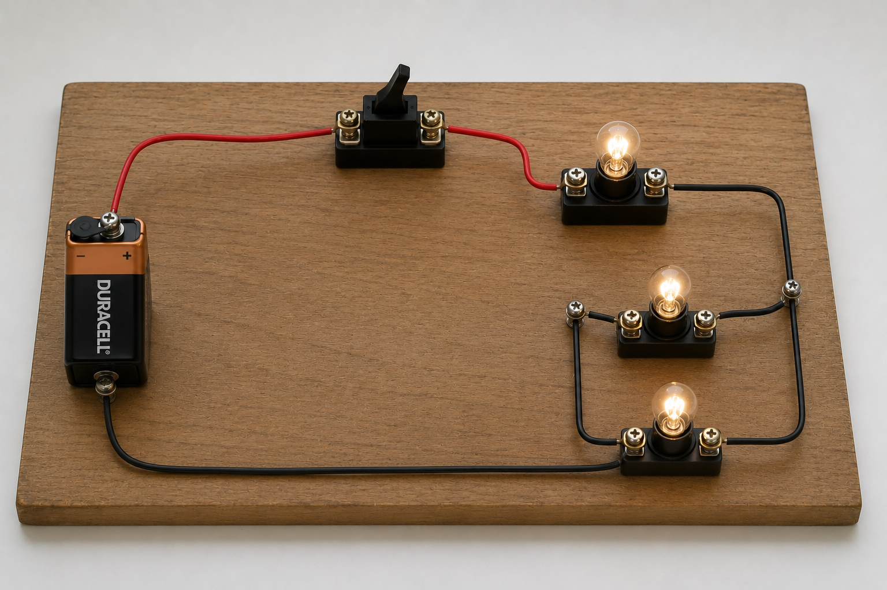
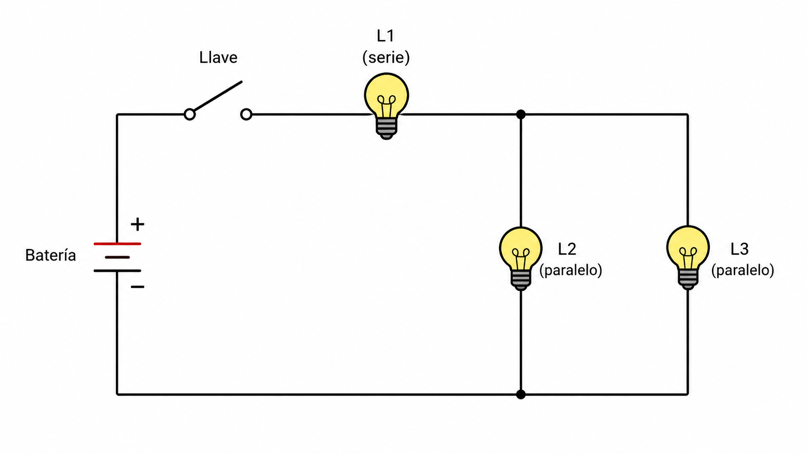

Sistemas Multi Física - Profesor Javier Pereyra
Circuitos eléctricos mixtos
Clase 7 para aprender a leer circuitos que combinan conexiones en serie y en paralelo, calcular resistencias equivalentes por etapas e interpretar cómo se reparten la tensión y la corriente.
1 Idea inicial
En las clases anteriores estudiamos dos estilos puros de conexión: serie y paralelo. En un circuito real, muchas veces aparecen mezclados. Por eso hablamos de circuitos mixtos.
La idea central es simple: una parte del circuito puede obligar a la corriente a pasar por un único camino, mientras otra parte puede ofrecer ramas alternativas. Es como salir del aula por un pasillo único y luego encontrar dos escaleras posibles para bajar.
2 Imagen realista del circuito
En el montaje realista se ve una fuente, una llave, una lamparita en serie y luego una bifurcación con dos lamparitas en paralelo. La primera lamparita recibe toda la corriente; después, la corriente se divide entre las dos ramas.

3 Esquema para leer el circuito
El esquema permite ver con claridad la estructura eléctrica. \(R_1\) está en serie con un bloque formado por \(R_2\) y \(R_3\) en paralelo. Los puntos A y B son nodos: allí la corriente se divide y luego vuelve a reunirse.

4 Cómo reconocer serie y paralelo dentro de un mixto
Una pregunta útil para no perderse es: ¿estos dos elementos están entre los mismos dos puntos o uno está obligado a pasar después del otro? Si comparten los dos puntos, están en paralelo. Si uno queda a continuación del otro en el único camino, están en serie.
5 Método de resolución por etapas
Los circuitos mixtos se resuelven como si fuéramos plegando el dibujo. Primero simplificamos una parte pequeña, luego usamos ese resultado para simplificar el circuito completo.
- Identificar nodos y ramas. Marcar qué resistencias están claramente en serie o en paralelo.
- Resolver primero el grupo más interno o más evidente. En nuestro esquema, \(R_2\) y \(R_3\) están en paralelo.
- Reemplazar ese grupo por una sola resistencia equivalente.
- Resolver el circuito simplificado usando las reglas de serie, paralelo y Ley de Ohm.
- Volver al circuito original para calcular corrientes o tensiones parciales si el problema lo pide.
6 Fórmulas necesarias
En serie: las resistencias se suman directamente.
La corriente es la misma en todos los elementos del tramo en serie.
En paralelo: se suman las inversas de las resistencias.
La tensión es la misma en todas las ramas del bloque paralelo.
Ley de Ohm: permite relacionar tensión, corriente y resistencia.
En esta clase la usamos después de calcular la resistencia equivalente.
7 Sistema de unidades
| Magnitud | Símbolo | Unidad SI | Se usa para... |
|---|---|---|---|
| Resistencia | \(R\) | ohm \((\Omega)\) | Medir la oposición al paso de la corriente. |
| Tensión | \(V\) | volt \((V)\) | Medir la energía entregada por unidad de carga. |
| Corriente | \(I\) | ampere \((A)\) | Medir la carga que circula por unidad de tiempo. |
| Potencia | \(P\) | watt \((W)\) | Analizar brillo, consumo o efecto térmico si se pide. |
8 Ejemplo resuelto 1: paralelo dentro de serie
Problema: \(R_1=4\,\Omega\) está en serie con un bloque paralelo formado por \(R_2=6\,\Omega\) y \(R_3=3\,\Omega\). La fuente entrega \(12\,V\). Calcula \(R_{eq}\), la corriente total y la tensión en \(R_1\).
Datos: \(R_1=4\,\Omega\), \(R_2=6\,\Omega\), \(R_3=3\,\Omega\), \(V_T=12\,V\).
Bloque paralelo: \(\frac{1}{R_{23}}=\frac{1}{6\,\Omega}+\frac{1}{3\,\Omega}=\frac{1}{6}+\frac{2}{6}=\frac{3}{6}\). Entonces \(R_{23}=2\,\Omega\).
Resistencia equivalente total: \(R_{eq}=R_1+R_{23}=4\,\Omega+2\,\Omega=6\,\Omega\).
Corriente total: \(I_T=\frac{V_T}{R_{eq}}=\frac{12\,V}{6\,\Omega}=2\,A\).
Tensión en \(R_1\): \(V_1=I_T\cdot R_1=2\,A\cdot4\,\Omega=8\,V\).
Interpretación: el bloque paralelo queda con \(4\,V\), porque la fuente entrega \(12\,V\) y \(R_1\) usa \(8\,V\). Esa tensión de \(4\,V\) es común para \(R_2\) y \(R_3\).
9 Ejemplo resuelto 2: serie dentro de paralelo
Problema: una rama tiene \(R_1=2\,\Omega\) y \(R_2=4\,\Omega\) en serie. Esa rama está en paralelo con \(R_3=6\,\Omega\). La fuente es de \(12\,V\). Calcula la resistencia equivalente y la corriente total.
Datos: \(R_1=2\,\Omega\), \(R_2=4\,\Omega\), \(R_3=6\,\Omega\), \(V_T=12\,V\).
Primera rama: \(R_{12}=R_1+R_2=2\,\Omega+4\,\Omega=6\,\Omega\).
Paralelo final: \(\frac{1}{R_{eq}}=\frac{1}{R_{12}}+\frac{1}{R_3}=\frac{1}{6\,\Omega}+\frac{1}{6\,\Omega}=\frac{2}{6}\). Entonces \(R_{eq}=3\,\Omega\).
Corriente total: \(I_T=\frac{V_T}{R_{eq}}=\frac{12\,V}{3\,\Omega}=4\,A\).
Interpretación: las dos ramas tienen la misma resistencia equivalente, por eso la corriente total se reparte por igual: \(2\,A\) por cada rama.
10 Errores comunes
- Sumar todo directamente: solo se puede hacer cuando todo está en serie.
- Aplicar paralelo a resistencias que no comparten nodos: para estar en paralelo deben estar conectadas entre los mismos dos puntos.
- Olvidar volver al circuito original: \(R_{eq}\) ayuda a calcular \(I_T\), pero las corrientes y tensiones parciales requieren mirar otra vez las ramas.
- Confundir tensión y corriente: en serie se conserva la corriente; en paralelo se conserva la tensión.
11 Actividades
- Observa el esquema de la sección 3. Explica por qué \(R_2\) y \(R_3\) están en paralelo y por qué ese bloque está en serie con \(R_1\).
- Un circuito tiene \(R_1=5\,\Omega\) en serie con un paralelo de \(R_2=10\,\Omega\) y \(R_3=10\,\Omega\). Calcula \(R_{eq}\).
- \(R_1=3\,\Omega\) está en serie con un paralelo de \(R_2=6\,\Omega\) y \(R_3=12\,\Omega\). Si \(V_T=14\,V\), calcula \(R_{eq}\) e \(I_T\).
- Una rama tiene dos resistencias en serie de \(4\,\Omega\) y \(8\,\Omega\). Esa rama está en paralelo con una resistencia de \(12\,\Omega\). Calcula la resistencia equivalente total.
- En el circuito del ejercicio 2, si la fuente es de \(20\,V\), calcula la corriente total y la tensión sobre \(R_1\).
- Completa la tabla para un circuito donde \(R_1\) está en serie con \(R_2\parallel R_3\):
\(R_1\) \(R_2\) \(R_3\) \(R_{23}\) \(R_{eq}\) \(2\,\Omega\) \(6\,\Omega\) \(6\,\Omega\) \(4\,\Omega\) \(8\,\Omega\) \(8\,\Omega\) \(1\,\Omega\) \(3\,\Omega\) \(6\,\Omega\) - Una fuente de \(9\,V\) alimenta \(R_1=1\,\Omega\) en serie con \(R_2=4\,\Omega\) y \(R_3=4\,\Omega\) en paralelo. Calcula \(R_{eq}\), \(I_T\), \(V_1\) y la tensión del bloque paralelo.
- En un circuito mixto, \(R_1=6\,\Omega\) y \(R_2=3\,\Omega\) están en serie dentro de una rama. Esa rama está en paralelo con \(R_3=9\,\Omega\). Si \(V_T=18\,V\), calcula \(I_T\).
- Explica qué ocurriría con la corriente total si se agrega otra resistencia en paralelo al bloque \(R_2\parallel R_3\), manteniendo la misma fuente. ¿Aumenta, disminuye o queda igual? Justifica.
- Dibuja un circuito mixto distinto al de la sección 3. Debe tener una fuente, una llave, al menos tres resistencias y marcas de nodos. Luego indica qué parte resolverías primero.
12 Preguntas para pensar
- ¿Por qué conviene simplificar un circuito mixto por etapas y no intentar resolver todo de una sola vez?
- ¿Puede una resistencia estar "cerca" de otra en el dibujo y aun así no estar en serie con ella?
- ¿Qué dato del esquema te permite afirmar que dos resistencias están en paralelo?
- En una casa, ¿por qué sería poco práctico conectar todos los artefactos en serie?